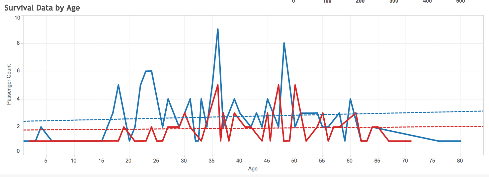

Aakriti Kaul
Bachelor of Engineering in Information Technology
Investing in Genius

- Performed exploratory analysis to understand the trend of venture capital investments in multiple forays of the country for Clean Technology and Corporate Technology
- Created a themed plot to show a linear chart of investments made to each technology over the years right from the year 1995. A significant observation was made of a lull in investment during early 2000s - towards both sectors. This could be attributed to the decline in economic activity which mainly occurred in developed countries during that period
- Converted data from the regional venture capital investments into a Time Series format to analyze the data across time and across regions.
- The Time Series plot is generated for total venture capital investments by region from 1985-2014 with color encoding for each region. Silicon Valley has, predictably, the highest investments made into technology across spheres consistently
Effectiveness of Excess Property Program

- Performed exploratory data analysis to derive a correlation between the total acquisition cost incurred (TAC) for USA's "Excess Property Program" and the impact of these on criminal activity and law enforcement in different states
- Created a multi panel line plot to find comprehensive trend lines wherein the most evident observation made is the relation of crime rate to the number of law enforcement agencies
- Created map components to study the trend across states and used color encoding that shows the prominence of the major variables in all the states. Multiple maps are compared to see if there is a correlation between variables
Global Morality Compass
- Performed analysis to visualize what respondents in 40 countries thought about eight topics often discussed as moral issues
- The visualization uses a global map view to mark each of the 40 countries where the survey was conducted. Hovering over each marker provides a summary of results from the country and the percentage of total responses provided from one of ten geographical regions
- The map view also implements a zoom and drag feature which in turn enables the user to zoom into a specific country or drag a specific country into view
- Implemented multiple drop down menus for easy filtering of data
- Created three interactive charts which enlist each response to a morality issue in individual columns. Thus, a matrix of country-response-topic is formed for easy interpretation of data
- The chart data modifies per selection of markers on the global map component and vice versa
Stormy Sights

- Used R programming techniques to generate a plot for mapping trend of duration of storms across specific set of start dates
- Created a multi panel line plot to find comprehensive trend lines for intensities of their sustained winds during storms across each month. The data is color encoded per the ratings on a standard Saffir Simpson scale, used for classifying hurricanes
- Implemented a bar plot to portray count of each category storm - hurricane, cyclone, super typhoon, tropical depression, tropical storm, typhoon - across the six major storm afflicted regions
- Additionally implemented a comparative plot of names given to each recorded storm to analyze naming trends across the six major storm afflicted regions. Both male and female names are equally distributed, however gender-neutral names are most commonly used for official records and data
EPL Top Performers : Contribution Analysis
- Created a visualization in Tableau to view the performance of players awarded the Golden Boot as a comparison of their success at the Barclay's Premier League club versus their national team contribution. The data ranges for the year range 1992-2015
- The visualization uses a clean bar chart which graphs the rate of contribution a golden boot winner has had. The color encoding depicts distribution of these winners by nationality within each Premier League club.
- The user has easy access to drop down menus to view performance of specific clubs or players across seasons and visualize how the team or player fared. An additional parameter control also facilitates filtering down data based on a minimum number of goals scored
- In order to track the performance of a single player the user can hover over the mark points which provide a summary of the player including the name, nationality, total number of goals and games played
- On clicking the legend of selected nationality we can highlight appropriate data points from the visualization and have their forms represented against the faded visualization
Survival Analysis of The Titanic

- The project analyses data from the ill-fated maiden voyage of the RMS Titanic
- Through a visualization created in Tableau we can understand the impact of different parameters - age,economic status, gender - on the survival rate of an individual onboard the liner
- Color encoding throughout the visualization is used to depict the survivors - marked as blue - and those who did not survive, marked in red
- Through the drop down menus provided, the user can further study the fate of a specific group of individuals, based on sex. This categorical data is also depicted through classic symbols of gender
- Trend lines plotted for correlation between survivor count and age debunk the "women and children first" belief
- It is observed through the use of an interactive bubble chart,the higher the economic status the better the chances of survival. A large percentage of survivors were passengers from the 1st Class aboard the ship
- Through a tool tip we get more detailed and compact information which can help us summarize the learnings from provided data